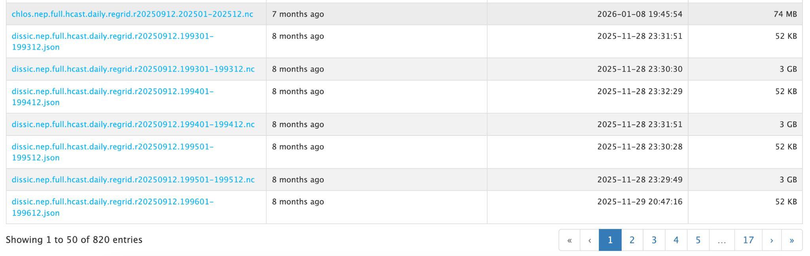
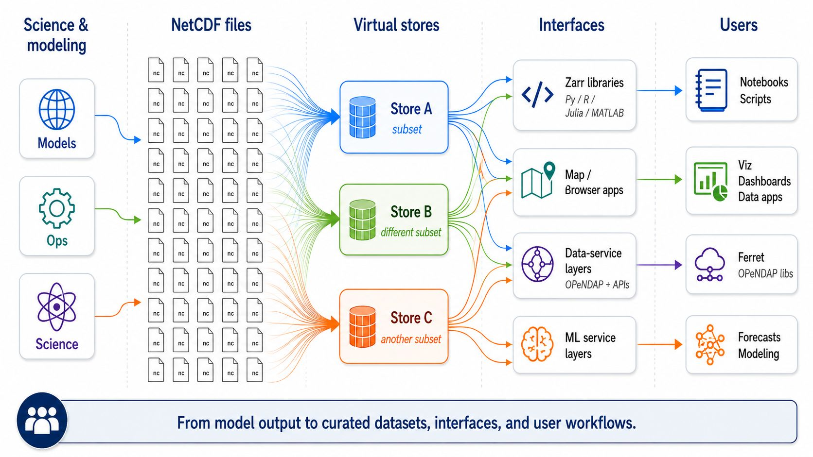
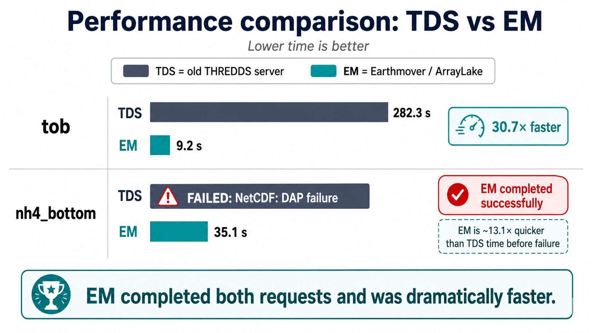

Virtual Icechunk · IOOS Hackathon 2026
Why virtual Icechunk?
Deliver a product, not a pile of files
So many NetCDF files

CEFI MOM6 Northeast Pacific hindcast on the PSL THREDDS server: page 1 of 17.
820 files, from one model, one hindcast, one region, and one release.
Users want a product, not a pile of files

Why not just download the files, or use THREDDS?
Downloading
- Gigabytes to get the one slice you need
- Copies on every laptop, all out of date
- Hours of scripting before any science
Data servers
- Cap large requests (PSL THREDDS: 500 MB each)
- Fail under load (“NetCDF: DAP failure”)
Object storage (S3, Google Cloud, Azure)
- Serves byte ranges, not whole files
- Spreads requests across many machines, so parallel readers do not queue behind each other
- In practice, as many connections as you can throw at it
From minutes to seconds

Resampling a 2-D CEFI MOM6 NEP variable: THREDDS vs. a virtual store in Earthmover Arraylake. Holmes, ESIP, July 2026.
Let’s see this in action
Bering Sea snow crab, 1994–2015
306 TB of HYCOM reanalysis · opens in ~1 s · nothing downloaded


VirtualiZarr: no reprocessing
- Keep the data as it is. The NetCDF files stay where the provider put them.
- Build a catalog of chunks. For every chunk: which file, at what byte offset, and how long.
- Save the catalog as one Zarr dataset. Readers open that, and read the bytes straight from the original files.
If the files are compatible (the same grid, chunking and encoding), there is nothing to rewrite.
Why Icechunk, not Kerchunk?
Kerchunk made virtual datasets possible. Icechunk makes them safe to share and keep up to date.
- Transactions. Commits are atomic, with snapshots and rollback. Kerchunk references are plain JSON or Parquet files that anyone can overwrite.
- Safe appends. New files are added in a commit, and readers never see a half-written store. With Kerchunk you rewrite the references yourself.
- Zarr-native. The store is a real Zarr store, so any Zarr reader opens it. Kerchunk needs an extra fsspec reference layer.
- Scale. Chunk manifests are built for huge chunk counts. Very large JSON reference sets are slow to load.
- Modern I/O. The stack reads through Rust and obstore, not fsspec: more flexible (S3, GCS, Azure, local, HTTP) and fast under many concurrent requests.
Handling forecast model run collections
A forecast model writes a new file every day. Keep every run, not just the latest.
- Two time dimensions.
timeis the forecast reference time, one value per file.stepis the lead time, the same in every file. Data are(time, step, ...). - Append along
time. Each new file adds one entry. Nothing is rewritten. - Valid time is computed. It is
time + step, never stored. - Pick a run, or a best estimate. Select one forecast, or stitch the newest hours from every run into one continuous series.
One store holds the whole history of every forecast.
New tools make this much easier
- VirtualiZarr 2: reads NetCDF/HDF5 metadata and builds the chunk catalog
- Icechunk 2: stores the catalog, with versions and commits, like git for data
- Coding agents + ocean-icechunks-skills: plan, build, check and document a store for you
Let’s try it out
Make your own virtual store
5 NOAA NDVI NetCDF files on AWS
303 MB of data, left in place
54 kB Icechunk store
Resources
- This tutorial: ocean-icechunks.github.io/2026-ioos-hackathon
- Agent skills: ocean-icechunks/ocean-icechunks-skills
- Example stores: ocean-icechunks/hycom, ocean-icechunks/icechunks
- Background: AI-ready scientific data archives (Earthmover, 2026)
- Docs: VirtualiZarr, Icechunk
Next: put an agent to work
⌂ Home · Why virtual Icechunk?